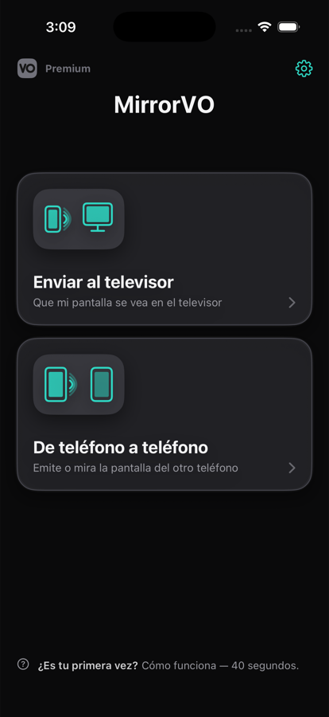
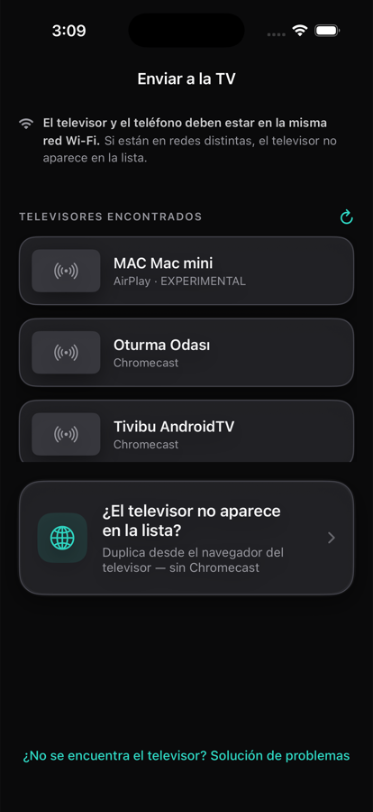
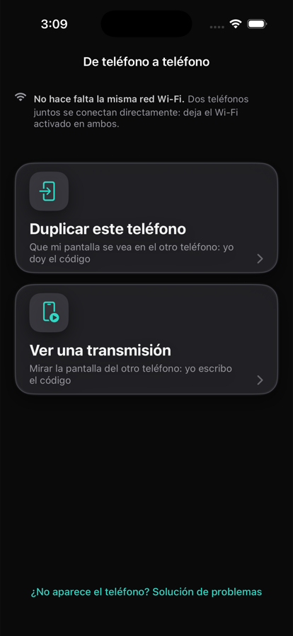

MirrorVO duplica la pantalla de tu iPhone o iPad en el televisor a través de tu propia red Wi-Fi. Si tienes Chromecast, elígelo de la lista. Si no, usa el navegador web del propio televisor: escribes una dirección corta una sola vez.

Ni al abrir, ni antes de emitir, ni en la pantalla de compra. Tampoco en el uso gratuito.
No hay nada que registrar. Ábrela y empieza a duplicar.
La etiqueta de privacidad de Apple en nuestra página del App Store dice «Datos no recopilados». La imagen va directamente de tu teléfono al destino; nunca pasa por nuestros servidores.
La mayoría de las apps de esta categoría exigen un Chromecast. MirrorVO ofrece un segundo camino: el navegador web del propio televisor.
Un Chromecast o un televisor con Chromecast integrado: elígelo de la lista y empieza.
MirrorVO muestra una dirección corta, la escribes una vez en el televisor y aparece tu pantalla. Probado en TCL, Philips y Samsung.

Dos teléfonos, uno al lado del otro, se conectan directamente; ni siquiera tienen que estar en la misma red Wi-Fi. Uno da un código y el otro lo introduce.

Conecta el teléfono y el televisor a la misma red.
Selecciónalo de la lista o usa el camino del navegador.
La imagen puede tardar 10-15 segundos en aparecer en el televisor.
Solo tú puedes iniciarla. iOS no permite que las apps empiecen a emitir la pantalla por su cuenta; el aviso del sistema necesita tu confirmación cada vez.
Esto también figura en nuestra página del App Store. Preferimos que lo sepas antes de descargarla, no después.
Cuatro niveles hasta 1080p60, nada bloqueado. Si la red no puede con ello, la calidad baja sola un nivel y vuelve a subir cuando puede; no tienes que hacer nada.
Türkçe, English, Deutsch, Español, Français, Русский, 日本語, العربية y 22 más. Si tu teléfono está en un idioma pero quieres la app en otro: Ajustes → Idioma. El resto del teléfono no cambia.